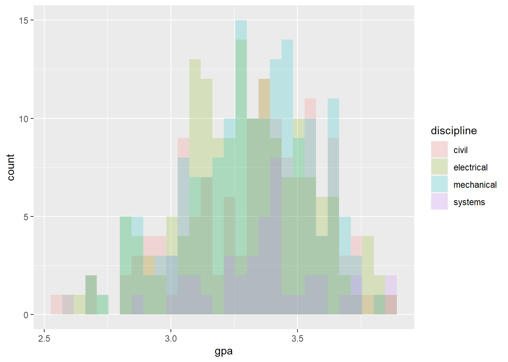
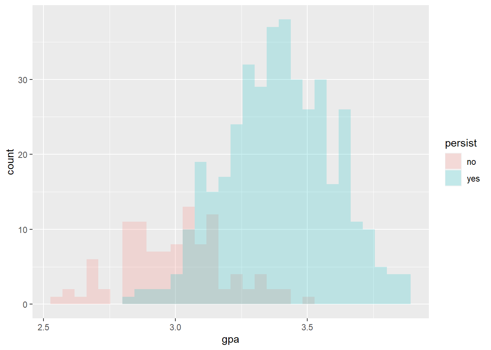
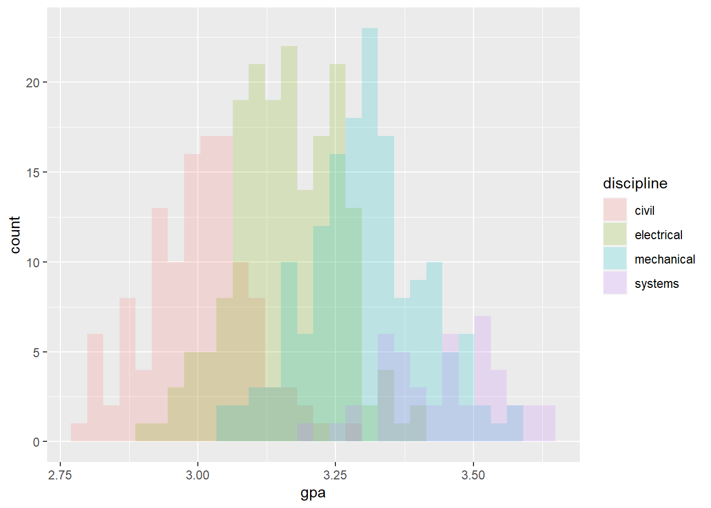
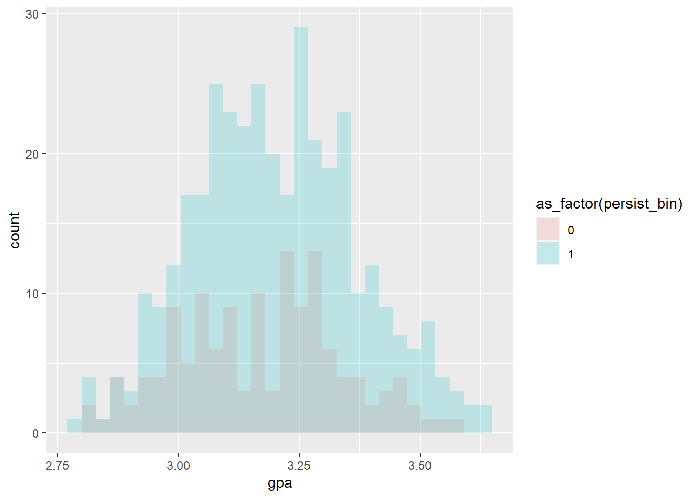
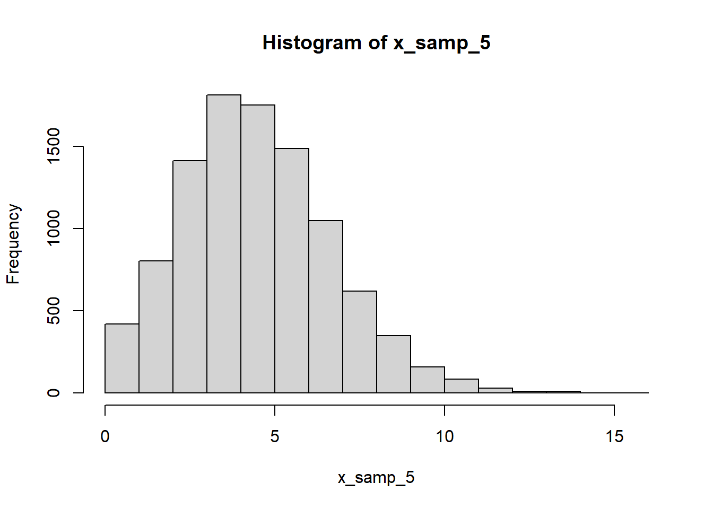
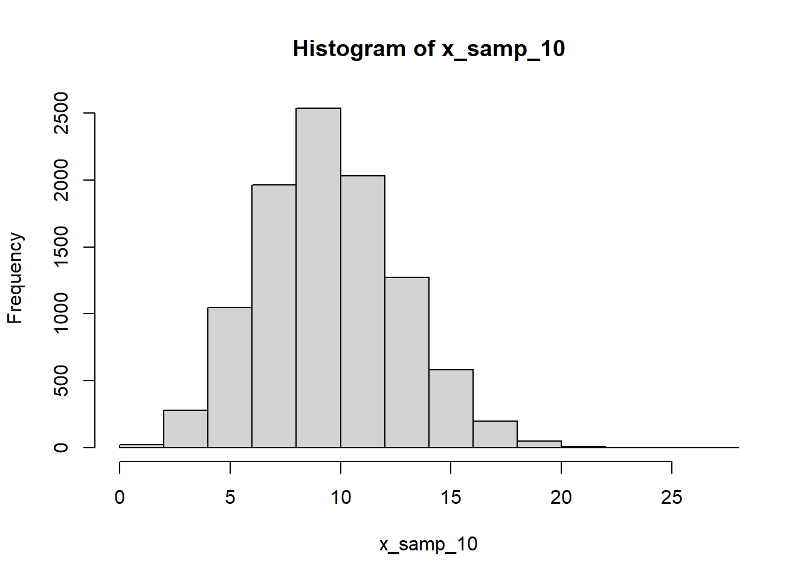
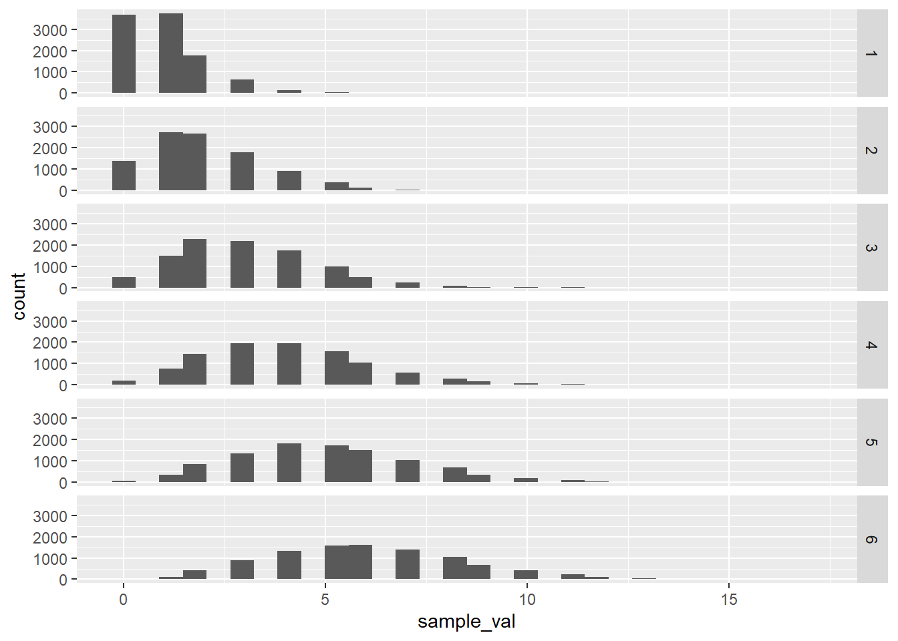

Chapter7 Week 7: Logistic Regression
To study how to run a logistic regression model in R, we are going to create simulate some data.
NOTE: Simulating data is a good way to get a sense of how the model works since you already know the data-generate process that you are trying to characterize with the model. This means you already know the “ground truth.” In practice, we do not have this luxury when we run our studies - it is this “ground truth” that we’re looking for. Nonetheless, it can be helpful to remove one piece of uncertainty when learning the technical aspects by using data that are already characterized because you made them.
We will proceed through several rounds of data generation to see how the model may vary.
7.1 Round 1 - No systematic variation in outcomes
disciplines <- c("civil", "mechanical", "electrical", "systems")
disciplines_prob <- c(0.25, 0.3, 0.35, 0.1)
know_engineer <- c("immediate_fam", "distant_fam", "friend", "none")
know_engineer_prob <- c(0.2, 0.4, 0.3, 0.1)
persistence <- c("yes", "no")
persistence_prob <- c(0.8, 0.2)Now we will generate the actual sample of 500 students
samp_size <- 500
disc_samp <- sample(x = disciplines, size = samp_size, prob = disciplines_prob, replace = TRUE)
know_samp <- sample(x = know_engineer, size = samp_size, prob = know_engineer_prob, replace = TRUE)
pers_samp <- sample(x = persistence, size = samp_size, prob = persistence_prob, replace = TRUE)
samp_df <- tibble(discipline = disc_samp,
know_eng = know_samp,
persist = pers_samp,
gpa = round(rnorm(n = samp_size, mean = 3, sd = 0.3), 2))Up to now, we have simulated the data collection process. This is the point where we would typically be cleaning the data and starting our analysis
First, add in a new binary column for the persistence variable (coding “yes” as 1 and “no” as 0)
samp_df <- samp_df %>%
mutate(persist_bin = case_when(persist == "yes" ~ 1,
persist == "no" ~ 0))Second, get a sense of the distributions of some of the variables in our model
str(samp_df)## tibble [500 x 5] (S3: tbl_df/tbl/data.frame)
## $ discipline : chr [1:500] "systems" "electrical" "electrical" "mechanical" ...
## $ know_eng : chr [1:500] "none" "distant_fam" "immediate_fam" "friend" ...
## $ persist : chr [1:500] "yes" "no" "yes" "yes" ...
## $ gpa : num [1:500] 3.16 3 3.42 3.08 2.98 2.74 2.95 2.79 3.24 3.32 ...
## $ persist_bin: num [1:500] 1 0 1 1 1 1 1 0 0 0 ...table(samp_df$persist)##
## no yes
## 91 409describe(samp_df)## Warning in describe(samp_df): NAs introduced by coercion
## Warning in describe(samp_df): NAs introduced by coercion
## Warning in describe(samp_df): NAs introduced by coercion## Warning in FUN(newX[, i], ...): no non-missing arguments to min; returning Inf
## Warning in FUN(newX[, i], ...): no non-missing arguments to min; returning Inf
## Warning in FUN(newX[, i], ...): no non-missing arguments to min; returning Inf## Warning in FUN(newX[, i], ...): no non-missing arguments to max; returning -Inf
## Warning in FUN(newX[, i], ...): no non-missing arguments to max; returning -Inf
## Warning in FUN(newX[, i], ...): no non-missing arguments to max; returning -Inf## vars n mean sd median trimmed mad min max range skew
## discipline* 1 500 NaN NA NA NaN NA Inf -Inf -Inf NA
## know_eng* 2 500 NaN NA NA NaN NA Inf -Inf -Inf NA
## persist* 3 500 NaN NA NA NaN NA Inf -Inf -Inf NA
## gpa 4 500 3.01 0.31 3.01 3.01 0.3 2.03 3.91 1.88 -0.01
## persist_bin 5 500 0.82 0.39 1.00 0.90 0.0 0.00 1.00 1.00 -1.64
## kurtosis se
## discipline* NA NA
## know_eng* NA NA
## persist* NA NA
## gpa -0.06 0.01
## persist_bin 0.70 0.02table(samp_df$discipline)##
## civil electrical mechanical systems
## 128 185 144 43xtabs(~ discipline + persist_bin, data = samp_df)## persist_bin
## discipline 0 1
## civil 28 100
## electrical 34 151
## mechanical 21 123
## systems 8 35Third, model the outcome (persistence) as a function of three predictor variables (discipline, knowing an engineering, and gpa)
model <- glm(persist_bin ~ discipline + know_eng + gpa, data = samp_df, family = binomial())
summary(model)##
## Call:
## glm(formula = persist_bin ~ discipline + know_eng + gpa, family = binomial(),
## data = samp_df)
##
## Deviance Residuals:
## Min 1Q Median 3Q Max
## -2.1568 0.5063 0.6005 0.6719 0.8277
##
## Coefficients:
## Estimate Std. Error z value Pr(>|z|)
## (Intercept) 2.2773 1.1906 1.913 0.0558 .
## disciplineelectrical 0.2254 0.2873 0.785 0.4327
## disciplinemechanical 0.5008 0.3200 1.565 0.1175
## disciplinesystems 0.1977 0.4483 0.441 0.6592
## know_engfriend 0.1037 0.2672 0.388 0.6979
## know_engimmediate_fam 0.5073 0.3589 1.414 0.1574
## know_engnone 0.3165 0.4495 0.704 0.4814
## gpa -0.3808 0.3797 -1.003 0.3159
## ---
## Signif. codes: 0 '***' 0.001 '**' 0.01 '*' 0.05 '.' 0.1 ' ' 1
##
## (Dispersion parameter for binomial family taken to be 1)
##
## Null deviance: 474.41 on 499 degrees of freedom
## Residual deviance: 468.21 on 492 degrees of freedom
## AIC: 484.21
##
## Number of Fisher Scoring iterations: 4tidy(model)## # A tibble: 8 x 5
## term estimate std.error statistic p.value
## <chr> <dbl> <dbl> <dbl> <dbl>
## 1 (Intercept) 2.28 1.19 1.91 0.0558
## 2 disciplineelectrical 0.225 0.287 0.785 0.433
## 3 disciplinemechanical 0.501 0.320 1.57 0.118
## 4 disciplinesystems 0.198 0.448 0.441 0.659
## 5 know_engfriend 0.104 0.267 0.388 0.698
## 6 know_engimmediate_fam 0.507 0.359 1.41 0.157
## 7 know_engnone 0.317 0.450 0.704 0.481
## 8 gpa -0.381 0.380 -1.00 0.316Since we generated the data without any relationships between the predictors and the binary outcome, we do not expect any of the predictor variables to be statistically significant. Sometimes there will be a significant predictor, but that emphasizes the idea p values are not necessarily the most reliable indicator of importance.
7.2 Round 2 - Systematic varation in outcomes as a function of discipline
Now, to introduce some systematic variation, we will change the probabilities of persistence (the outcome variable we are modeling) as a function of major but not as a function of the other two predictors
disciplines <- c("civil", "mechanical", "electrical", "systems")
disciplines_prob <- c(0.25, 0.3, 0.35, 0.1)
know_engineer <- c("immediate_fam", "distant_fam", "friend", "none")
know_engineer_prob <- c(0.2, 0.4, 0.3, 0.1)We generate the actual data here.
samp_size <- 5000
disc_samp_2 <- sample(x = disciplines, size = samp_size, prob = disciplines_prob, replace = TRUE)
know_samp_2 <- sample(x = know_engineer, size = samp_size, prob = know_engineer_prob, replace = TRUE)
#pers_samp_2 <- sample(x = persistence, size = samp_size, prob = persistence_prob, replace = TRUE)Now we will combine our data into one dataframe.
samp_df_2 <- tibble(discipline = disc_samp_2,
know_eng = know_samp_2,
gpa = round(rnorm(n = samp_size, mean = 3, sd = 0.3), 2))Now we want to have some different outcomes whose probabilities vary by discipline. We’ll create a new column called persist_prob that describes the probability of persisting from year one to year two (e.g., 0.6 means there is a 0.6 prob of a student persisting)
samp_df_2 <- samp_df_2 %>%
mutate(persist_prob = case_when(discipline == "civil" ~ 0.6,
discipline == "mechanical" ~ 0.7,
discipline == "electrical" ~ 0.8,
discipline == "systems" ~ 0.9))We will create a vector that samples depending on the value of the persistence probability at that index. That value varies depending on the discipline for that student at that index value in the vector.
persist_outcome <- modify(.x = samp_df_2$persist_prob, .f = ~rbinom(n = 1, size = 1, prob = .x))Now we add that persistence outcome column to our dataframe
samp_df_2$persist_bin <- persist_outcomeUp to now, we have simulated the data collection process. This is the point where we would typically be cleaning the data and starting our analysis,
str(samp_df_2)## tibble [5,000 x 5] (S3: tbl_df/tbl/data.frame)
## $ discipline : chr [1:5000] "electrical" "mechanical" "electrical" "electrical" ...
## $ know_eng : chr [1:5000] "friend" "distant_fam" "distant_fam" "distant_fam" ...
## $ gpa : num [1:5000] 3.5 3.07 3.03 2.57 3.13 2.8 2.76 3.42 3.01 2.85 ...
## $ persist_prob: num [1:5000] 0.8 0.7 0.8 0.8 0.6 0.8 0.6 0.9 0.6 0.6 ...
## $ persist_bin : num [1:5000] 1 1 1 1 1 1 0 1 1 0 ...Let’s check on the distribution of persistence by major. xtabs() is a function that creates a contingency table (more on that in 2 weeks)
xtabs(~ persist_bin + discipline, data=samp_df_2)## discipline
## persist_bin civil electrical mechanical systems
## 0 526 326 477 60
## 1 737 1357 1064 453Or we can use describe()
describe(samp_df_2)## Warning in describe(samp_df_2): NAs introduced by coercion
## Warning in describe(samp_df_2): NAs introduced by coercion## Warning in FUN(newX[, i], ...): no non-missing arguments to min; returning Inf
## Warning in FUN(newX[, i], ...): no non-missing arguments to min; returning Inf## Warning in FUN(newX[, i], ...): no non-missing arguments to max; returning -Inf
## Warning in FUN(newX[, i], ...): no non-missing arguments to max; returning -Inf## vars n mean sd median trimmed mad min max range skew
## discipline* 1 5000 NaN NA NA NaN NA Inf -Inf -Inf NA
## know_eng* 2 5000 NaN NA NA NaN NA Inf -Inf -Inf NA
## gpa 3 5000 3.01 0.30 3.0 3.01 0.30 1.91 4.12 2.21 0.06
## persist_prob 4 5000 0.73 0.10 0.7 0.72 0.15 0.60 0.90 0.30 0.10
## persist_bin 5 5000 0.72 0.45 1.0 0.78 0.00 0.00 1.00 1.00 -0.99
## kurtosis se
## discipline* NA NA
## know_eng* NA NA
## gpa 0.06 0.00
## persist_prob -1.02 0.00
## persist_bin -1.02 0.01Or even use table()
table(samp_df_2$discipline)##
## civil electrical mechanical systems
## 1263 1683 1541 513Now, model the outcome (persistence) as a function of three predictor variables (discipline, knowing an engineering, and gpa)
model_2 <- glm(persist_bin ~ discipline + know_eng + gpa, data = samp_df_2, family = binomial())And examine the model output with either summary()…
summary(model_2)##
## Call:
## glm(formula = persist_bin ~ discipline + know_eng + gpa, family = binomial(),
## data = samp_df_2)
##
## Deviance Residuals:
## Min 1Q Median 3Q Max
## -2.1424 -1.2855 0.6611 0.8680 1.0852
##
## Coefficients:
## Estimate Std. Error z value Pr(>|z|)
## (Intercept) 0.35145 0.33153 1.060 0.28911
## disciplineelectrical 1.08537 0.08412 12.902 < 2e-16 ***
## disciplinemechanical 0.46340 0.07944 5.834 5.42e-09 ***
## disciplinesystems 1.68832 0.14888 11.340 < 2e-16 ***
## know_engfriend 0.23347 0.07935 2.942 0.00326 **
## know_engimmediate_fam 0.08323 0.08782 0.948 0.34328
## know_engnone 0.06379 0.11337 0.563 0.57363
## gpa -0.03448 0.10778 -0.320 0.74907
## ---
## Signif. codes: 0 '***' 0.001 '**' 0.01 '*' 0.05 '.' 0.1 ' ' 1
##
## (Dispersion parameter for binomial family taken to be 1)
##
## Null deviance: 5908.6 on 4999 degrees of freedom
## Residual deviance: 5638.2 on 4992 degrees of freedom
## AIC: 5654.2
##
## Number of Fisher Scoring iterations: 4…or tidy()
tidy(model_2)## # A tibble: 8 x 5
## term estimate std.error statistic p.value
## <chr> <dbl> <dbl> <dbl> <dbl>
## 1 (Intercept) 0.351 0.332 1.06 2.89e- 1
## 2 disciplineelectrical 1.09 0.0841 12.9 4.38e-38
## 3 disciplinemechanical 0.463 0.0794 5.83 5.42e- 9
## 4 disciplinesystems 1.69 0.149 11.3 8.27e-30
## 5 know_engfriend 0.233 0.0794 2.94 3.26e- 3
## 6 know_engimmediate_fam 0.0832 0.0878 0.948 3.43e- 1
## 7 know_engnone 0.0638 0.113 0.563 5.74e- 1
## 8 gpa -0.0345 0.108 -0.320 7.49e- 17.3 Round 3 - Systematic varation in outcomes as a function of discipline and gpa
Now, to introduce some systematic variation, we will change the probabilities of persistence (the outcome variable we are modeling) as a function of major and gpa but not as a function of knowing an engineer.
disciplines <- c("civil", "mechanical", "electrical", "systems")
disciplines_prob <- c(0.25, 0.3, 0.35, 0.1)
know_engineer <- c("immediate_fam", "distant_fam", "friend", "none")
know_engineer_prob <- c(0.2, 0.4, 0.3, 0.1)Simulate the dataf or disciplines, knowing an engineer, and the persistence outcome
samp_size <- 500
disc_samp_3 <- sample(x = disciplines, size = samp_size, prob = disciplines_prob, replace = TRUE)
know_samp_3 <- sample(x = know_engineer, size = samp_size, prob = know_engineer_prob, replace = TRUE)
pers_samp_3 <- sample(x = persistence, size = samp_size, prob = persistence_prob, replace = TRUE)And combine all the generated data into one dataframe with tibble().
samp_df_3 <- tibble(discipline = disc_samp_3,
know_eng = know_samp_3,
persist = pers_samp_3)Up to now, we have simulated the data collection process. This is the point where we would typically be cleaning the data and starting out analysis
To run the logistic regression, we need our outcome coded as 0/1, not no/yes to address this, we add in a new binary column for the persistence variable (coding “yes” as 1 and “no” as 0)
samp_df_3 <- samp_df_3 %>%
mutate(persist_bin = case_when(persist == "yes" ~ 1,
persist == "no" ~ 0))Now, since we want to look at the potential effect of gpa on persistence, we create a bookkeeping column for gpa_mean for students who do and do not persist to year two.
samp_df_3 <- samp_df_3 %>%
mutate(gpa_mean = case_when(persist == "yes" ~ 3.4,
persist == "no" ~ 3.0))Simulate the gpa data
gpa_vec <- round(modify(.x = samp_df_3$gpa_mean, .f = ~rnorm(n = 1, mean = .x, sd = .2)), 2)Add the simulated data back to our data frame
samp_df_3$gpa <- gpa_vecUp to now, we have simulated the data collection process. This is the point where we would typically be cleaning the data and starting our analysis
Check the structure of the dataframe to make sure it looks as expected
str(samp_df_3)## tibble [500 x 6] (S3: tbl_df/tbl/data.frame)
## $ discipline : chr [1:500] "mechanical" "electrical" "civil" "civil" ...
## $ know_eng : chr [1:500] "friend" "immediate_fam" "immediate_fam" "distant_fam" ...
## $ persist : chr [1:500] "yes" "yes" "yes" "yes" ...
## $ persist_bin: num [1:500] 1 1 1 1 1 1 1 1 0 1 ...
## $ gpa_mean : num [1:500] 3.4 3.4 3.4 3.4 3.4 3.4 3.4 3.4 3 3.4 ...
## $ gpa : num [1:500] 3.45 3.82 3.42 3.63 3.45 3.26 3.83 3.23 3.15 3.14 ...Let’s check on the distribution of persistence by major. xtabs() is a function that creates a contingency table (more on that in 2 weeks)
xtabs(~ persist_bin + discipline, data=samp_df_3)## discipline
## persist_bin civil electrical mechanical systems
## 0 30 35 36 5
## 1 100 127 130 37…or with describe()…
describe(samp_df_3)## Warning in describe(samp_df_3): NAs introduced by coercion
## Warning in describe(samp_df_3): NAs introduced by coercion
## Warning in describe(samp_df_3): NAs introduced by coercion## Warning in FUN(newX[, i], ...): no non-missing arguments to min; returning Inf
## Warning in FUN(newX[, i], ...): no non-missing arguments to min; returning Inf
## Warning in FUN(newX[, i], ...): no non-missing arguments to min; returning Inf## Warning in FUN(newX[, i], ...): no non-missing arguments to max; returning -Inf
## Warning in FUN(newX[, i], ...): no non-missing arguments to max; returning -Inf
## Warning in FUN(newX[, i], ...): no non-missing arguments to max; returning -Inf## vars n mean sd median trimmed mad min max range skew
## discipline* 1 500 NaN NA NA NaN NA Inf -Inf -Inf NA
## know_eng* 2 500 NaN NA NA NaN NA Inf -Inf -Inf NA
## persist* 3 500 NaN NA NA NaN NA Inf -Inf -Inf NA
## persist_bin 4 500 0.79 0.41 1.00 0.86 0.00 0.00 1.00 1.00 -1.41
## gpa_mean 5 500 3.32 0.16 3.40 3.34 0.00 3.00 3.40 0.40 -1.41
## gpa 6 500 3.31 0.26 3.34 3.32 0.27 2.56 3.88 1.32 -0.34
## kurtosis se
## discipline* NA NA
## know_eng* NA NA
## persist* NA NA
## persist_bin -0.03 0.02
## gpa_mean -0.03 0.01
## gpa -0.24 0.01…or with table().
table(samp_df_3$discipline)##
## civil electrical mechanical systems
## 130 162 166 42Check the distribution of the gpa values by discipline, just to make sure
samp_df_3 %>%
ggplot(aes(x = gpa, fill = discipline)) +
geom_histogram(alpha = 0.2, position = "identity")## `stat_bin()` using `bins = 30`. Pick better value with `binwidth`.
# be sure to put alpha before positionsamp_df_3 %>%
ggplot(aes(x = gpa, fill = persist)) +
geom_histogram(alpha = 0.2, position = "identity")## `stat_bin()` using `bins = 30`. Pick better value with `binwidth`.
Now, model the outcome (persistence) as a function of three predictor variables (discipline, knowing an engineering, and gpa)
model_3 <- glm(persist_bin ~ discipline + know_eng + gpa, data = samp_df_3, family = binomial())And examine the results with summary() or tidy()
summary(model_3)##
## Call:
## glm(formula = persist_bin ~ discipline + know_eng + gpa, family = binomial(),
## data = samp_df_3)
##
## Deviance Residuals:
## Min 1Q Median 3Q Max
## -2.95665 0.05105 0.18222 0.41311 2.17923
##
## Coefficients:
## Estimate Std. Error z value Pr(>|z|)
## (Intercept) -30.9280 3.1802 -9.725 <2e-16 ***
## disciplineelectrical 0.6007 0.4104 1.464 0.143
## disciplinemechanical 0.1713 0.4070 0.421 0.674
## disciplinesystems 1.1028 0.6992 1.577 0.115
## know_engfriend -0.4395 0.3893 -1.129 0.259
## know_engimmediate_fam -0.1139 0.4268 -0.267 0.790
## know_engnone -0.6012 0.5407 -1.112 0.266
## gpa 10.0531 1.0073 9.980 <2e-16 ***
## ---
## Signif. codes: 0 '***' 0.001 '**' 0.01 '*' 0.05 '.' 0.1 ' ' 1
##
## (Dispersion parameter for binomial family taken to be 1)
##
## Null deviance: 516.59 on 499 degrees of freedom
## Residual deviance: 274.07 on 492 degrees of freedom
## AIC: 290.07
##
## Number of Fisher Scoring iterations: 6tidy(model_3)## # A tibble: 8 x 5
## term estimate std.error statistic p.value
## <chr> <dbl> <dbl> <dbl> <dbl>
## 1 (Intercept) -30.9 3.18 -9.73 2.35e-22
## 2 disciplineelectrical 0.601 0.410 1.46 1.43e- 1
## 3 disciplinemechanical 0.171 0.407 0.421 6.74e- 1
## 4 disciplinesystems 1.10 0.699 1.58 1.15e- 1
## 5 know_engfriend -0.439 0.389 -1.13 2.59e- 1
## 6 know_engimmediate_fam -0.114 0.427 -0.267 7.90e- 1
## 7 know_engnone -0.601 0.541 -1.11 2.66e- 1
## 8 gpa 10.1 1.01 9.98 1.87e-237.4 Round 4 - GPA and persistence vary by discipline
disciplines <- c("civil", "mechanical", "electrical", "systems")
disciplines_prob <- c(0.25, 0.3, 0.35, 0.1)
know_engineer <- c("immediate_fam", "distant_fam", "friend", "none")
know_engineer_prob <- c(0.2, 0.4, 0.3, 0.1)Simulate the data for disciplines, knowing an engineer, and the persistence outcome
samp_size <- 500
student_id <- seq(samp_size)
disc_samp_4 <- sample(x = disciplines, size = samp_size, prob = disciplines_prob, replace = TRUE)
know_samp_4 <- sample(x = know_engineer, size = samp_size, prob = know_engineer_prob, replace = TRUE)
pers_samp_4 <- sample(x = persistence, size = samp_size, prob = persistence_prob, replace = TRUE)Combine these all together in tibble().
samp_df_4 <- tibble(sid = student_id,
discipline = disc_samp_4,
know_eng = know_samp_4)Up to now, we have simulated the data collection process. This is the point where we would typically be cleaning the data and starting out analysis
Start the data analysis for logistic regression here
Now, since we want to look at the potential effect of gpa on persistence, we create a bookkeeping column for gpa_mean for students who do and do not persist to year two.
samp_df_4 <- samp_df_4 %>%
mutate(gpa_mean = case_when(discipline == "civil" ~ 3.0,
discipline == "electrical" ~ 3.15,
discipline == "mechanical" ~ 3.3,
discipline == "systems" ~ 3.45))Simulate the gpa data.
gpa_vec <- round(modify(.x = samp_df_4$gpa_mean, .f = ~rnorm(n = 1, mean = .x, sd = .1)), 2)Add the simulated data back to our data frame
samp_df_4$gpa <- gpa_vecWe will create a vector that samples depending on the value of the persistence probability at that index.
That value varies depending on the discipline for that student at that index value in the vector.
Now we want to have some different outcomes whose probabilities vary by discipline. We’ll create a new column called.
persist_prob that describes the probability of persisting from year one to year two (e.g., 0.6 means there is a 0.6 prob of a student persisting)
samp_df_4 <- samp_df_4 %>%
mutate(persist_prob = case_when(discipline == "civil" ~ 0.6,
discipline == "mechanical" ~ 0.7,
discipline == "electrical" ~ 0.8,
discipline == "systems" ~ 0.9))persist_outcome <- modify(.x = samp_df_4$persist_prob, .f = ~rbinom(n = 1, size = 1, prob = .x))Now we add that persistence outcome column to our dataframe
samp_df_4$persist_bin <- persist_outcomeUp to now, we have simulated the data collection process. This is the point where we would typically be cleaning the data and starting our analysis
Check the structure of the dataframe to make sure it looks as expected.
str(samp_df_4)## tibble [500 x 7] (S3: tbl_df/tbl/data.frame)
## $ sid : int [1:500] 1 2 3 4 5 6 7 8 9 10 ...
## $ discipline : chr [1:500] "electrical" "electrical" "electrical" "mechanical" ...
## $ know_eng : chr [1:500] "distant_fam" "immediate_fam" "friend" "distant_fam" ...
## $ gpa_mean : num [1:500] 3.15 3.15 3.15 3.3 3 3.45 3 3.15 3.15 3.3 ...
## $ gpa : num [1:500] 2.99 2.95 3.13 3.23 3.09 3.57 2.88 3.25 3.39 3.09 ...
## $ persist_prob: num [1:500] 0.8 0.8 0.8 0.7 0.6 0.9 0.6 0.8 0.8 0.7 ...
## $ persist_bin : num [1:500] 1 0 1 1 0 1 0 0 1 1 ...Let’s check on the distribution of persistence by major. xtabs() is a function that creates a contingency table (more on that in 2 weeks).
xtabs(~ persist_bin + discipline, data=samp_df_4)## discipline
## persist_bin civil electrical mechanical systems
## 0 49 34 43 9
## 1 73 144 112 36describe(samp_df_4)## Warning in describe(samp_df_4): NAs introduced by coercion
## Warning in describe(samp_df_4): NAs introduced by coercion## Warning in FUN(newX[, i], ...): no non-missing arguments to min; returning Inf
## Warning in FUN(newX[, i], ...): no non-missing arguments to min; returning Inf## Warning in FUN(newX[, i], ...): no non-missing arguments to max; returning -Inf
## Warning in FUN(newX[, i], ...): no non-missing arguments to max; returning -Inf## vars n mean sd median trimmed mad min max range
## sid 1 500 250.50 144.48 250.50 250.50 185.32 1.00 500.00 499.00
## discipline* 2 500 NaN NA NA NaN NA Inf -Inf -Inf
## know_eng* 3 500 NaN NA NA NaN NA Inf -Inf -Inf
## gpa_mean 4 500 3.19 0.14 3.15 3.18 0.22 3.00 3.45 0.45
## gpa 5 500 3.19 0.17 3.20 3.19 0.17 2.78 3.63 0.85
## persist_prob 6 500 0.73 0.09 0.70 0.73 0.15 0.60 0.90 0.30
## persist_bin 7 500 0.73 0.44 1.00 0.79 0.00 0.00 1.00 1.00
## skew kurtosis se
## sid 0.00 -1.21 6.46
## discipline* NA NA NA
## know_eng* NA NA NA
## gpa_mean 0.18 -0.89 0.01
## gpa 0.11 -0.35 0.01
## persist_prob 0.05 -1.00 0.00
## persist_bin -1.03 -0.93 0.02table(samp_df_4$discipline)##
## civil electrical mechanical systems
## 122 178 155 45Check the distribution of the gpa values by discipline, just to make sure.
samp_df_4 %>%
ggplot(aes(x = gpa, fill = discipline)) +
geom_histogram(alpha = 0.2, position = "identity")## `stat_bin()` using `bins = 30`. Pick better value with `binwidth`.
- be sure to put alpha before position
samp_df_4 %>%
ggplot(aes(x = gpa, fill = as_factor(persist_bin))) +
geom_histogram(alpha = 0.2, position = "identity")## `stat_bin()` using `bins = 30`. Pick better value with `binwidth`.
Now, model the outcome (persistence) as a function of three predictor variables (discipline, knowing an engineering, and gpa)
model_4 <- glm(persist_bin ~ discipline + know_eng + gpa, data = samp_df_4, family = binomial())
summary(model_4)##
## Call:
## glm(formula = persist_bin ~ discipline + know_eng + gpa, family = binomial(),
## data = samp_df_4)
##
## Deviance Residuals:
## Min 1Q Median 3Q Max
## -1.9664 -1.2860 0.6731 0.8202 1.1175
##
## Coefficients:
## Estimate Std. Error z value Pr(>|z|)
## (Intercept) 1.8297 3.1549 0.580 0.561930
## disciplineelectrical 1.1537 0.3209 3.595 0.000324 ***
## disciplinemechanical 0.7242 0.4162 1.740 0.081795 .
## disciplinesystems 1.2693 0.6369 1.993 0.046249 *
## know_engfriend 0.3072 0.2690 1.142 0.253381
## know_engimmediate_fam -0.0742 0.2590 -0.287 0.774492
## know_engnone -0.2379 0.3837 -0.620 0.535200
## gpa -0.4946 1.0495 -0.471 0.637426
## ---
## Signif. codes: 0 '***' 0.001 '**' 0.01 '*' 0.05 '.' 0.1 ' ' 1
##
## (Dispersion parameter for binomial family taken to be 1)
##
## Null deviance: 583.26 on 499 degrees of freedom
## Residual deviance: 563.31 on 492 degrees of freedom
## AIC: 579.31
##
## Number of Fisher Scoring iterations: 4tidy(model_4)## # A tibble: 8 x 5
## term estimate std.error statistic p.value
## <chr> <dbl> <dbl> <dbl> <dbl>
## 1 (Intercept) 1.83 3.15 0.580 0.562
## 2 disciplineelectrical 1.15 0.321 3.60 0.000324
## 3 disciplinemechanical 0.724 0.416 1.74 0.0818
## 4 disciplinesystems 1.27 0.637 1.99 0.0462
## 5 know_engfriend 0.307 0.269 1.14 0.253
## 6 know_engimmediate_fam -0.0742 0.259 -0.287 0.774
## 7 know_engnone -0.238 0.384 -0.620 0.535
## 8 gpa -0.495 1.05 -0.471 0.6377.4.1 Interlude looking at poisson distribution
n <- 10000
set.seed(123)
x_samp_5 <- rpois(n, lambda = 5)
hist(x_samp_5)
x_samp_10 <- rpois(n, lambda = 10)
hist(x_samp_10)
param_vect <- rep(c(1, 2, 3, 4, 5, 6), each = n)
samp_vect <- modify(.x = param_vect, .f = ~ rpois(n = 1, lambda = .x))samp_df <- tibble(param_val = param_vect,
sample_val = samp_vect)samp_df %>%
ggplot(aes(x = sample_val)) +
geom_histogram() +
facet_grid(param_val ~ .)## `stat_bin()` using `bins = 30`. Pick better value with `binwidth`.